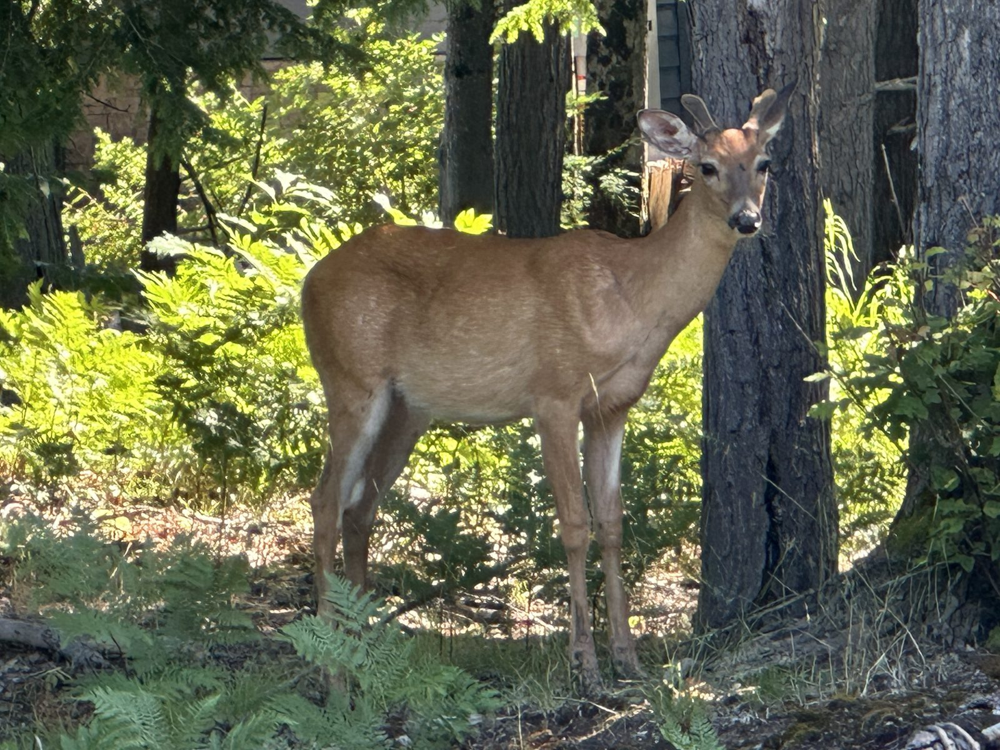
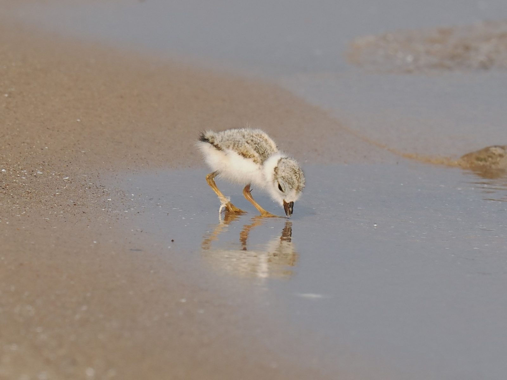

Guides
Environmental Best Practices for Residents
Caring for the lakes, river, dunes, and forests that make our township special.
Lake Township is defined by water — nine miles of Lake Michigan shoreline, Crystal Lake, Platte Lake, Little Platte Lake, and the Platte River, with much of the township lying within or beside the Sleeping Bear Dunes National Lakeshore. Nearly everything we do on our land eventually reaches the water. These practices help every resident and visitor protect the clear water, healthy shorelines, and “up north” character we all value.
Protecting Our Lakes and River
- Maintain your septic system — it’s the single biggest thing most households can do. Have your septic tank inspected and pumped regularly (every 3–5 years for most systems), know where your tank and drainfield are, use phosphate-free cleaning products, compost or throw out food waste rather than running a garbage disposal, and never put grease, chemicals, or medications down the drain. The Benzie-Leelanau District Health Department (bldhd.org) permits and can advise on septic systems.
- Skip the fertilizer and weed killer near the water — and go phosphorus-free everywhere. Avoid fertilizing at all within a generous buffer of any lake, stream, or wetland, never fertilize before rain, and keep grass clippings and leaves out of the water. Keep weed killers and pesticides well away from the water’s edge. Never spray vegetation growing in the water — treating aquatic plants requires a state permit from EGLE.
- Keep a natural buffer (greenbelt) along your shoreline. A strip of native trees, shrubs, and deep-rooted plants filters runoff, holds the bank against erosion, discourages nuisance geese, and provides habitat. Watershed zoning requires a vegetated buffer of at least 35 feet; wider is better. The Benzie Conservation District (benziecd.org) offers native plants and free shoreline advice.
- Get permits before any shoreline, bottomland, or wetland work. Seawalls, riprap, dredging, filling, beach grooming below the ordinary high-water mark, and work in wetlands generally require a permit from EGLE (michigan.gov/egle), and earth changes near lakes and streams require a county soil erosion and sedimentation control permit.
- In the Crystal Lake watershed, know the Overlay District rules. Lake Township is one of four local governments that administer the Crystal Lake Watershed Overlay District, adopted in 1994. Additional standards may apply to construction, private roads, landscaping, tree removal, steep slopes, onsite waste disposal, and impervious surface coverage — check with the Zoning Administrator before starting any project.
- Manage stormwater on your own property. Direct downspouts onto lawns or into rain gardens rather than driveways, minimize new hard surfaces, and consider permeable materials for paths and parking.
- Boat gently near shore — your wake is your responsibility. State law requires slow-no-wake speed within 100 feet of shorelines, docks, rafts, swimmers, and anchored boats. For wake-surfing and wake-boarding, stay at least 500 feet from any shoreline or dock, in water at least 15 feet deep, and drain ballast tanks before trailering.
- Clean, drain, and dry every boat, trailer, and piece of gear — every time. Aquatic invasives like Eurasian watermilfoil and zebra mussels travel between lakes on hulls and trailers. Michigan law requires removing plants and draining water before leaving any access site. Anglers: decontaminate waders, nets, and gear too.
- Report invasive sightings promptly — early detection is everything. Eurasian watermilfoil is already being fought in Crystal Lake. Report suspicious plants or animals to your lake association or the Benzie Conservation District. Never dump bait buckets or aquariums into any lake or stream.
- Don’t move firewood. Tree-killing pests and diseases hitchhike in firewood. Buy or gather firewood where you’ll burn it.
- Learn and report invasive plants on land. Garlic mustard, Japanese knotweed, autumn olive, and baby’s breath (a particular problem in our dunes) crowd out native species. The Benzie Conservation District and Northwest Michigan Invasive Species Network can help.
Living with Our Dunes, Forests, and Wildlife
- Stay off fragile dunes and respect beach closures. Dune grass is what holds our dunes together — use established trails and access points. Sections of shoreline near the Platte River mouth are fenced seasonally to protect nesting piping plovers, an endangered species; keep your distance, leash pets where required, and never leave food on the beach.
- Landscape with native plants — anywhere on your property. Plants native to northern Michigan need little or no watering or fertilizer once established, and their deep roots hold soil and soak up runoff. Avoid invasive ornamentals still sold in some nurseries — such as Japanese barberry, burning bush, and periwinkle (myrtle). Think twice before removing a mature tree, too.
- Burn legally and safely — or don’t burn at all. Get a burn permit before any open burning, burn only natural wood and vegetation — never trash, plastics, or treated lumber — and never burn on windy days.
- Keep the night sky dark. The Township has adopted dark-sky lighting standards. Use fully shielded, downward-directed outdoor fixtures, warm-colored bulbs, and motion sensors or timers instead of dusk-to-dawn lights.
- Secure trash and don’t feed wildlife. Store garbage in animal-resistant containers and put it out the morning of pickup. Never intentionally feed deer, waterfowl, or other wildlife — it spreads disease and harms the animals.


Get Involved
Local organizations do remarkable work protecting our waters and lands, and they welcome volunteers and members:
- Benzie Conservation District
- Crystal Lake Watershed Association
- Platte Lake Association
- Little Platte Lake Association
- Grand Traverse Regional Land Conservancy